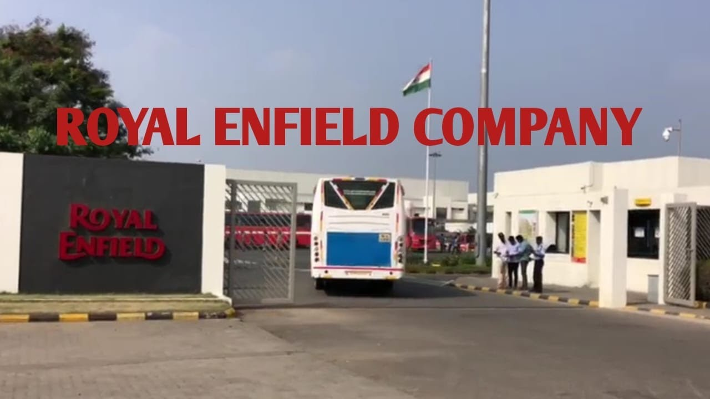

Royal Enfield Motor

Royal Enfield is an Indian motorcycle manufacturer, headquartered and manufactured in Chennai.[1] Royal Enfield is the oldest motorcycle brand in continuous production.[2]
The first Royal Enfield motorcycle was built in 1901 by The Enfield Cycle Company of Redditch, Worcestershire, England, the company was responsible for the design and original production of the Royal Enfield Bullet, the longest-lived motorcycle design in history.[3] Licensed from the original English Royal Enfield by Madras Motors, the company is now a subsidiary of Eicher Motors, an Indian automaker.[4] The company makes classic-looking motorcycles, including the Royal Enfield Bullet, Classic 350, Royal Enfield Thunderbird, Meteor 350, Classic 500, Interceptor 650, Continental, and Hunter 350. Royal Enfield also makes adventure and off-road motorcycles like the Royal Enfield Himalayan. Their motorcycles are equipped with single-cylinder and twin-cylinder engines.[5]